PEREGRINE FALCON
The peregrine falcon is the fastest bird in the whole world with the speed of242mph.It is from the family of falcons.
see more
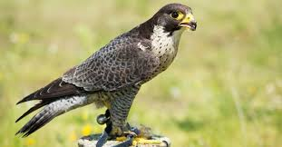 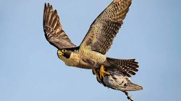 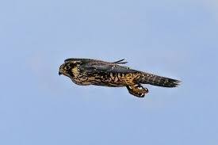
GOLDEN EAGLE
The golden eagle is the north America's largest bird of prey and the national bird of mexico.With the speed of200 mph.It can do anything
see more
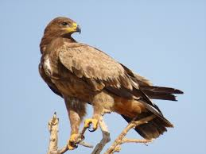 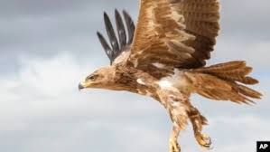 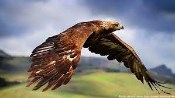
GYRFALCON
The male gyrfalcon is called a gyrkin in falconry.Gyrfalcon enjoy bathing in ice melting water.They have the speed of130 mph
see more
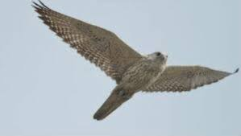 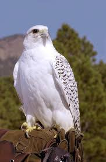 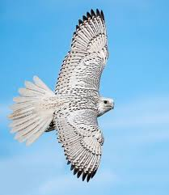
WHITE-THROATED NEEDLETAIL
The white-throated needletail feeds onflying insects,such as termites,ants,beetles and flies. They catch the insects in flight in their wide gaping beaks.They have the of105 mph
see more
 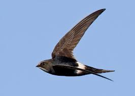
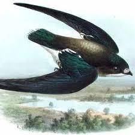
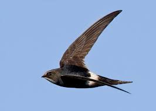
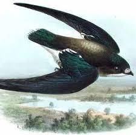